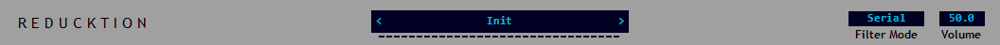
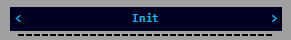
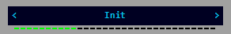

The Top Bar¶
The top bar provides access to the system menu, preset browser, voice display and master volume control.
Preset Browser¶
The preset browser occupies the centre section of the top bar. It shows the current preset and provides a way to navigate the contents of the currently selected preset bank.
To select a preset click the preset name panel. A menu will appear listing the names of the presets available; click a name to load its parameters into the plugin. Alternately click the ‘<’ and ‘>’ arrows to navigate from preset to preset loading each one in turn.
Reduction features a file-based preset management system in which presets are saved and loaded as files. The presets listed in the browser a simply files stored in the preset home directory and can be copied, moved or deleted just as you would any other document. To create a new preset simply save the current parameters with a new name.
Beware that switching presets, either via the browser or by loading directly from a file, will cause the current parameters to be overridden. Make sure to always save any changes you want to keep before selecting a new preset.
The presets displayed in the list are determined by the currently selected preset bank. A bank is simply a subdirectory within the ‘Presets’ home folder. As mentioned the currently selected bank is set using the system menu.
Note the selected bank only persists for the current session. The default bank will always be selected when the plugin is first loaded.
Preset banks must be located at the top level within the Preset folder; nested banks are not supported.
Voice Display¶
The voice display is located directly below the preset browser and shows the current voice activity. A highlighted segment indicates that a voice is playing.
Filter Mode¶
Reducktion’s filters can be arranged in three different ways; use this selection menu to choose between Serial, Parallel or Split modes. See the Filter section later in this guide for more information.
Master Volume¶
The Master Volume parameter display controls the main output level. This is the final stage of the audio signal path and the output is passed to the host for further processing.
Reducktion includes a +3dB hard clipper at the output stage to prevent excessive audio levels from reaching the host.